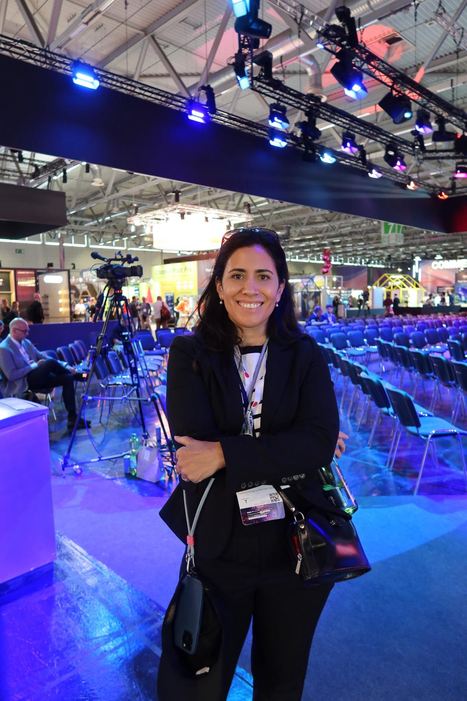

22+
markets, one digital ecosystem
Led the international digital marketing transition through a business-unit separation, migrating the MarTech ecosystem and establishing governance for content, DAM and analytics.
Digital CX MarTech Digital product AI enablement
I’m Margarita Colombo, a Swiss-based digital leader with 20+ years across digital marketing, customer experience and MarTech in medtech, life sciences and other regulated industries. I turn business needs into digital platforms that work across markets, and I bring along the teams who run them.
Open to permanent leadership roles in international organisations. Available for selected interim mandates.
Selected impact
Two decades across digital marketing and UX, including global roles in medtech and life sciences, where clarity and trust matter.
22+
Led the international digital marketing transition through a business-unit separation, migrating the MarTech ecosystem and establishing governance for content, DAM and analytics.
420%
At Medela, website impressions grew 420% and unique visitors grew 400%.
CHF2M+
Identified more than CHF 2 million in content investment that wasn’t delivering, and redirected the focus.
2020
Best Use of Content Marketing, won with BlueGlass for the Medela campaign “The Rise of Mum’s Journey”. The 2020 entry and BlueGlass on the win
“…a confirmation for our excellent collaboration with Medela.”
Experience includes Tecan, Medela, DeinDeal, mylife Diabetes Care and The Nuance Group.
Case studies
Four examples from mylife Diabetes Care and Medela of how I turn business needs into digital solutions and lead them through to results.
Case 01 · mylife Diabetes Care
When the diabetes care business separated from its parent, its digital marketing had to stand on its own: inherited tools, shared agencies and local teams across Europe, the UK, Australia and Canada. I led the transition with Marketing, IT, affiliates and agencies.
Process Map the inherited stack and contracts, migrate what worked, select the next CMS with IT, set governance for content, newsletters, DAM and analytics, and enable local teams.
Case 02 · Medela
A multi-year European digital roadmap that connected digital marketing and commerce with the capabilities behind them: technology, data and analytics, and digital culture, moving from fixing the basics to expanding and accelerating.
Process Turn the roadmap into yearly milestones for website, SEO and technology, and agree who does what across local, European and global teams for product launches, landing pages and web support. Europe built and supported; local teams owned their markets; global owned the platform.
Case 03 · Medela
Many European product pages only pointed to a store locator. I led a Buy Now solution across 15 countries that connects each product page to the right e-retailers, pharmacies and marketplaces, from requirements and rollout to tracking and sales enablement.
Process Gather requirements with the markets, match products to local retailers, build the workflow into the CMS for local teams, set up tracking, and equip sales to use the data.
Case 04 · Medela
Symphony is the hospital-grade pump many mothers first meet on the ward, often with little time for instructions. With the product teams I created the Symphony Hub: a QR code on the pump opens a mobile guide for mothers in hospital, mothers at home and healthcare professionals, from finding the right shield size to renting the pump for home use.
Process Define the three audiences and their paths, then test each step with usability scripts for mothers in hospital, mothers at home and midwives: scanning the code, choosing a path, assembling the pump set, picking the programme, cleaning and renting.
The hub todayExperience
A short view of the roles behind the work. I’m happy to send my full CV on request.
Led the international digital marketing transition during the business-unit separation, across 22+ markets. Migrated the MarTech ecosystem, adapted the brand for digital channels, selected the next CMS, set up governance for content, DAM and analytics, and restructured agency partnerships for 40% cost savings. Led a team of 2 direct and 10 indirect reports.
Three roles between 2018 and 2024, from Global Web Content Manager to Global Digital Marketing Manager to European digital experience lead across 11 markets. Global website programme, Buy Now partner commerce and a B2B hospital hub that contributed to a 30% increase in rental rates. Carried the digital channels through Medela’s rebranding and the creation of two sub-brands, Medela Cares and Medela Baby. Trained four commercial apprentices (KV).
Agile product ownership, user research, information architecture and A/B testing across web and mobile products, including the DeinDeal iOS app.
Designed the global web strategy and information architecture for tecan.com, ran Google Ads, paid media and organic SEO, and connected web acquisition to Salesforce CRM for automated lead capture.
Tech fluent. Business minded. Human centered.
AI has made production faster. The hard part is still deciding what matters and getting people on board. That’s where I work: clear strategy, thoughtful workflows and the trust that turns new technology into meaningful progress.
What I do
Areas I have led in-house, across markets and functions, mostly in medtech, life sciences and other regulated industries, where customers are cautious, claims need evidence and change has to be well governed.
Journeys, websites and content shaped around how customers really decide, built on research and usage data.
Business-side ownership from discovery and requirements to rollout: CMS, DAM, commerce and analytics, delivered with IT and development teams.
Consolidating fragmented stacks, setting clear ownership for content, data and tools, and making local markets part of the solution.
Moving teams from experiments to everyday practice, with workflows and governance that hold up in regulated environments.
About
Buenos Aires → San Francisco → Switzerland
I started as a designer who coded HTML, then trained in San Francisco during the early years of the web. Over the next two decades, I worked across digital marketing, UX and customer experience, often at the point where technology, business priorities and human behaviour meet.
One of my earliest lessons came in Buenos Aires in 2000, helping a sceptical commercial director set up online banking. When he saw digital not as a threat but as a way to grow, I understood what still drives my work: progress happens when people can see themselves in what comes next.
At OCA, Argentina’s private postal service, I led the redesign of the website. In 2002 it won the Premio mate.ar for e-commerce , from a shortlist that included MercadoLibre.
In 2001, as Europe prepared for the euro, I won a joint competition run by the Dante Alighieri, Goethe-Institut and Alliance Française in Buenos Aires. My website used an interactive map to explain each country’s currency and what the change would mean. For Europe it was historic. For me, an Argentine who had lived through australes and pesos, it was personal: a currency change is never just technical.
Today I bring that same instinct to marketing, MarTech and AI. The tools change quickly. What makes them work is still a clear direction, and people who understand why it matters to them.

Questions
A permanent leadership role in digital customer experience, MarTech or digital product, in an international organisation where I can lead successive programmes and build on them.
Most recently a team of 2 direct and 10 indirect reports at mylife Diabetes Care, working with agencies and affiliate marketing teams across 22+ markets. At Medela I led cross-functional project teams and trained four commercial apprentices (KV).
Medtech, life sciences and diagnostics, alongside e-commerce and consumer digital products.
Yes, for defined programmes, typically 12 to 24 months. I also take on selected advisory work.
I’m based near Zurich and hold Swiss and Italian citizenship, so I can work in Switzerland and across the EU.
English, German, Spanish and Italian.
Interim & advisory
Alongside my search for a permanent role, I take on selected interim mandates and advisory work in digital customer experience, MarTech and AI enablement, under the MargaLaCo name.
Discuss a mandateA good place to start
I’m open to permanent leadership roles and selected interim mandates. Tell me about the role or the programme, and we can start with a conversation.